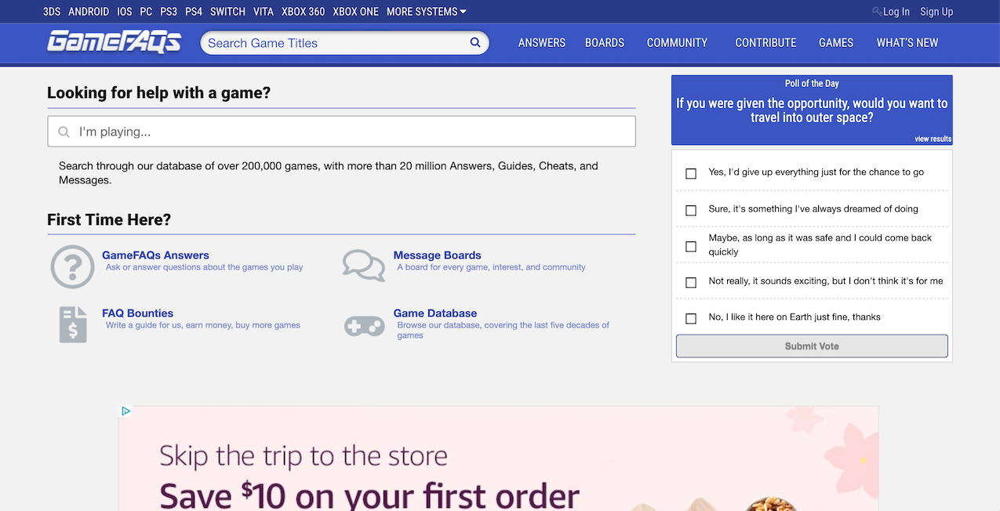

Introduction
This post will focus on the GameFAQs website. Created in 1995 by Jeff Veasey, GameFAQs hosts walkthroughs, guides, and tutorials for a video and computer games across many different platforms. The content of the site is organized by different games across different platforms, with actual content created by users. Users create content in either a plain-text (ASCII) format or within a HTML editor provided on the GameFAQs website.
 The front page of the GameFAQs Website.When this website was first created, all of the content was maintained by a single individual (the previously mentioned Jeff Veasey). As HTML was developed, the page was updated to support new features (including a brief period in the late 1990s during which HTML TABLEs formed an important part of the website). As the site became affiliated with (and later purchased by) major internet news websites, the site was changed to include advertisements and sponsored content.
When evaluating the accessibility of the website, it is worthwhile to distinguish between the user created content and the main website content. Although most of the analysis will focus on the main website, several comments will be made regarding user created content and how it relates to accessibility.
Initial Impressions
On its face, GameFAQs appears somewhat accessible. The site uses a few basic colors, including light gray, dark gray, black, white, and a few shades of blue. In most cases, text appears to sufficiently contrast the background color upon which it is placed. When the browser zoom level of the site is increased dramatically, website content shifts responsively. Both of these indications suggest that a user with some level of visual impairment would be able to use the site.
There are a few features that are more problematic with regard to accessibility. Nearly all of the images that appear on the site do not have ALT tags because they are not even implemented as IMG tags but as DIV tags with a specific reference to a style sheet. Although I am not familiar with screen assisting technology, one would conclude that this method of displaying images is not conducive to accessibility.
Using Accessibility Tools
In order to better assess the website, I installed ChromeVox, a Google screen reader for Chrome. ChromeVox allowed me to not only see how the website "looked" for people who could not see the site but also to see how navigation worked with the keyboard. One thing that it pointed out was that navigating this website with the keyboard is difficult; for some reason, the navigation bar at the top of the screen appears twice in the tab-order. A user trying to access something in the page content would have to tab through the main nav bar twice before getting to any other content. On reviewing the page in the Chrome DevTools, it is apparent that there is actually a side navigation bar (not displayed) which contains all of the same links; this bar is what the tab navigation is processing through.
Further review reveals that there are a considerable number of tab navigable elements throughout the page, making keyboard navigation extraordinarily difficult. However, this comment should be understood in the context that I rarely use the keyboard to navigate through web pages, so this may not be nearly as uncommon as I might believe.
Applying Third Party Analysis Tools
In addition to my own investigation, I also wanted to utilize third party tools like Google Lighthouse to assess the accessibility of the site. Lighthouse returned an overall Accessibility score of 35.
In general, GameFAQs did not fare well for accessibility.Many of the issues recognized by Lighthouse were similar to issues observed in my initial investigation. Images do not have ALT tags. Other issues were comparable, such as iFrames not having proper identification, buttons not having discernible names, and links not having clear names. Overall, the accessibility issues found by Lighthouse related to the sorts of things that a user with a Screen Reader or other accessibility tools might face.
One issue that Lighthouse did catch was that some of the font/background contrast levels were lower than is desirable. In general, this was not the case, but it appears that in at least one or two instances, the site uses a light blue font on a light gray background, creating a somewhat difficult contrast.
In addition to Google Lighthouse, I also reviewed the site using WAVE, the Web Accessibility Evaluation Tool. This tool found many of the same issues that Google Lighthouse did. For example, it many of the instances of having items without proper labeling. However, it also recognized a number of issues that I had not previously observed. For example, under the "Popular Questions" heading, every question had a link on the picture next to a separate link in the title of the question. WAVE identified these duplicate links as problematic for some screen reading technology.
Conclusions
A significant amount of the content featured on this website is built from database queries. For example, the front page of the site has sections built around showing the most recently accessed games, recently asked questions, and sponsored content from related websites. However, most of this injected content is built without consideration for accessibility. The templates used to display data does not provide meaningful information for screen readers and other assistive technology.
The biggest "first step" that I would recommend for improving the usability of the site would be to eliminate the redundant elements in the front page (i.e., the hidden side navigation bar) and restructure the way that the queried database information is displayed. It should not be especially difficult to have meaningful names stored in the database such that the constructed links would be more information, images would have corresponding alt tabs, and overall the information would be easier for users to access to access.